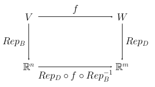

14 Representing General Homomorphisms
We have looked at how matrices represent linear maps from $\R^n$ to $\R^m$. We now turn to the idea of using matrices to represent arbitrary linear maps between finite-dimensional vector spaces. The representation of a homomorphism $h\colon V\to W$ depends on a choice of bases for $V$ and $W$; different bases give different representations. This is true even if the vector spaces in question are of the form $\R^n$. What we have looked at previously was the representation of homomorphisms from $\R^n$ to $\R^m$ with respect to the standard bases of $\R^n$ and $\R^n$, something that we will now denote ${\rm Rep}_{E_n,E_m}(h)$.
Definition: Suppose that $V$ and $W$ are finite-dimensional vector spaces and $h\colon V\to W$ is a homomorphism from $V$ to $W$. Let $B=\langle \vec\beta_1,\vec\beta_2,\dots,\vec\beta_n \rangle$ be a basis of $V$ and let $D=\langle \vec\delta_1,\vec\delta_2,\dots,\vec\delta_m \rangle$ be a basis of $W$. We define ${\rm Rep}_{B,D}(h)$, the representation of $h$ with respect to the bases $B$ and $D$, to be the $n\times m$ matrix whose entries, $c_{ij}$ are defined by $$h(\vec\beta_i) = c_{1i}\vec\delta_1 + c_{2i}\vec\delta_2 + \cdots + c_{mi}\vec\delta_m$$ for $i=1,2,\dots,n$. That is, the $i^{\rm th}$ column of ${\rm Rep}_{B,D}(h)$ contains the coefficients in the linear combination that represents $h(\vec\beta_i)$ in the basis $D$.
Consider the case of a homomorphism $f\colon \R^n\to\R^m$, and the standard bases $E_n=\langle \vec e_1,\vec e_2,\dots,\vec e_n \rangle$ and $E_m=\langle \vec e_1,\vec e_2,\dots,\vec e_m \rangle$. Then ${\rm Rep}_{E_n,E_m}(f)$ is obtained by writing $$f(\vec e_i)= c_{1i}\vec e_1 + c_{2i}\vec e_2 + \cdots + c_{mi}\vec e_m$$ and using the coefficients $c_{ij}$ as the entries in the matrix. But $c_{1i}\vec e_1 + c_{2i}\vec e_2 + \cdots + c_{mi}\vec e_m$ is just the column vector $\begin{pmatrix}c_{1i}\\c_{2i}\\\vdots\\c_{mi}\end{pmatrix}$, so ${\rm Rep}_{E_n,E_m}(f)$ is simply the matrix whose $i^{\rm th}$ column is $h(\vec e_i)$ written as a column vector in the usual way. This is the same matrix that we have associated previously with $f$.
To understand why this representation for general homomorphisms is useful, we need to review an earlier idea: representing a vector with respect to a basis. Suppose that $B=\langle\vec\beta_1,\vec\beta_2,\dots\vec\beta_n\rangle$ is a basis for a vector space $V$. For $\vec v\in V$, we defined $${\rm Rep}_B(\vec v) = \begin{pmatrix} c_1\\ c_2\\ \vdots\\ c_n\end{pmatrix}$$ where $\vec v$ is written in the basis $B$ as $\vec v=c_1\vec\beta_1+c_2\vec\beta_2+\cdots+c_n\vec\beta_n$. We can now see that ${\rm Rep}_B$ is a function ${\rm Rep_B}\colon V\to \R^n$ and that it is in fact an isomorphism of $V$ with $\R^n$. Note that we also have the inverse isomorphism ${\rm Rep}_B^{-1}\colon\R^n\to V$.
Now, suppose that we have a homomorphism $f\colon V\to W$, a basis $B=\langle \vec\beta_1,\vec\beta_2,\dots,\vec\beta_n \rangle$ of $V$ and a basis $D=\langle \vec\delta_1,\vec\delta_2,\dots,\vec\delta_m \rangle$ of $W$. We get a homomorphism from $\R^n$ to $\R^m$ by starting in $\R^n$, applying ${\rm Rep}_B^{-1}$ to get from $\R^n$ to $V$, then applying $f$ to get from $V$ to $W$, and finally applying ${\rm Rep}_D$ to get from $W$ to $\R^m$. This process is illustrated in this commutative diagram:

If $f(\vec\beta_i)=c_{1i}\vec\delta_1 + c_{2i}\vec\delta_2 + \cdots + c_{mi}\vec\delta_m$, then $$\begin{align*} {\rm Rep}_D\circ f\circ {\rm Rep}_B(\vec e_i) &= {\rm Rep}_D\circ f(\vec\beta_i)\\ &= {\rm Rep}_D(c_{1i}\vec\delta_1 + c_{2i}\vec\delta_2 + \cdots + c_{mi}\vec\delta_m)\\ &= c_{i1}{\rm Rep}_D(\vec\delta_1) + c_{i2}{\rm Rep}_D(\vec\delta_2) + \cdots c_{im}{\rm Rep}_D(\vec\delta_m)\\ &= c_{i1}\vec e_1 + c_{i2}\vec e_2 + \cdots c_{im}\vec e_m \end{align*}$$ That is, ${\rm Rep}_D\circ f\circ {\rm Rep}_B$ is the homomorphism from $\R^n$ to $\R^m$ whose matrix is ${\rm Rep}_{B,D}(f)$ (in the standard bases).
The basic idea here is that choosing bases for $V$ and $W$ makes them "look like" $\R^n$ and $\R^m$, and in that representation, a homomorphism $f\colon V\to W$ corresponds to a homomorphism from $\R^n$ to $\R^m$. That homomorphism from $\R^n$ to $\R^m$ is given, in the usual way, as multiplication by some $m\times n$ matrix, and that matrix is what we call ${\rm Rep}_{B,D}(f)$.
It's important to remember that if we choose non-standard bases $B$ and $D$ for $\R^n$ and $\R^m$, we get representation maps ${\rm Rep}_B\colon \R^n\to\R^n$ and ${\rm Rep}_D\colon \R^m\to\R^m$ and those representations give alternative matrix representations for homomorphisms from $\R^n$ to $\R^m$. Our usual matrix representations for such maps are tied specifically to the standard bases of $\R^n$ and $\R^m$.